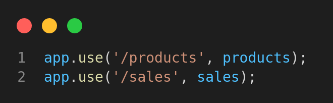
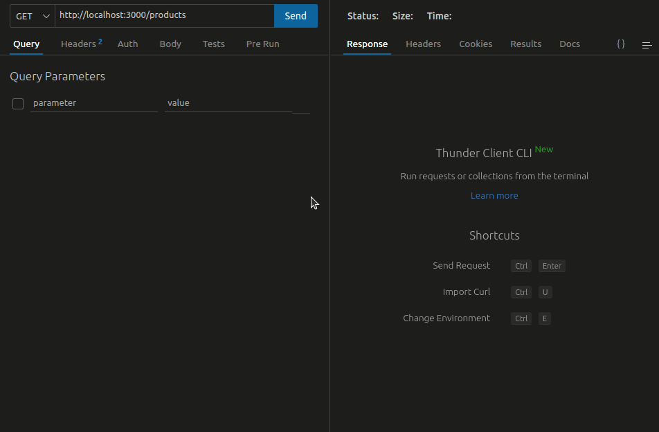
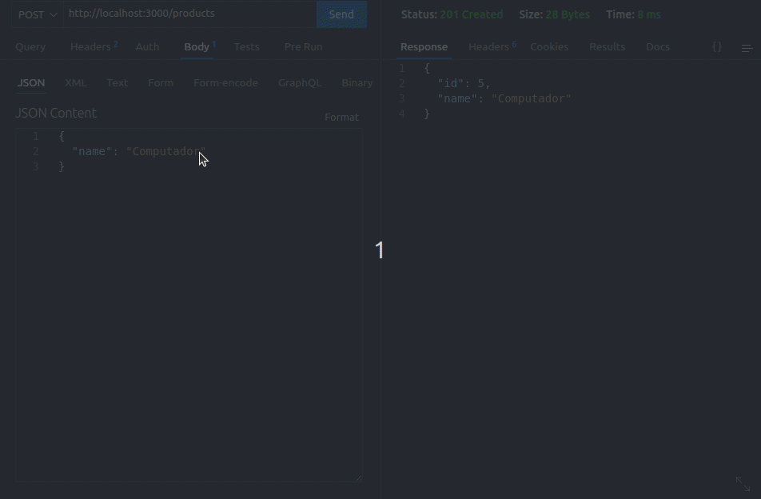
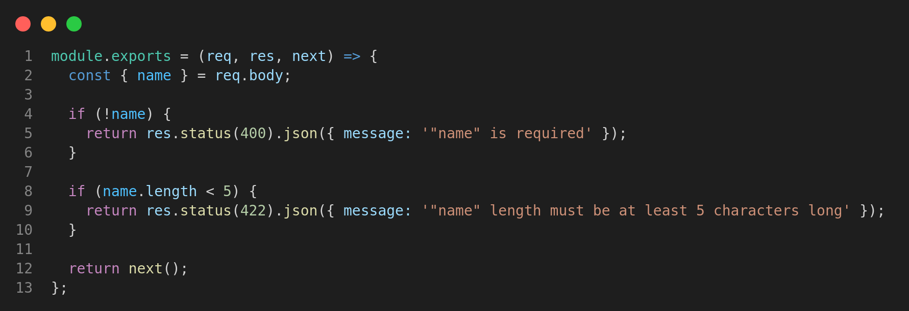

Aqui, é possível visualizar o projeto em pleno funcionamento e explorar suas principais funcionalidades por meio de gifs e printscreens. Caso deseje executar o projeto em sua própria máquina, basta selecionar a opção "GITHUB" no menu superior, onde encontrará um tutorial detalhado sobre a instalação do projeto em seu ambiente local. Lembre-se de me contar o que achou do projeto, ficarei imensamente feliz em receber o seu feedback. Ou caso tenha alguma dúvida sobre o projeto, você pode clicar em "DUVIDAS" e me mandar uma mensagem diretamente ou ir em HOME, lá você encontra todas as minhas redes sociais.
Este projeto consiste em uma sofisticada Interface de Programação de Aplicativos (API) que faz uso da renomada arquitetura MSC, também conhecida como Model-Service-Controller. A API em questão se apresenta como um avançado sistema de gerenciamento de vendas no formato dropshipping, cujas funcionalidades incluem a capacidade de criar, visualizar, deletar e atualizar produtos e vendas. Para o armazenamento e organização dos dados, é utilizada uma base de dados MySQL de alta performance, garantindo a confiabilidade e eficiência da gestão de informações. Ademais, a API é uma aplicação RESTful, o que significa que segue os princípios do estilo arquitetural REST, proporcionando uma interface uniforme para a comunicação entre clientes e servidores. Nesse sentido, é possível estabelecer uma comunicação confiável, segura e escalável, permitindo que a API seja integrada com outras aplicações e sistemas sem comprometer a qualidade do serviço oferecido. É importante ressaltar que a utilização da arquitetura MSC permite que a API seja desenvolvida de maneira modular e organizada, separando as responsabilidades entre os modelos, serviços e controladores, o que resulta em um sistema altamente flexível e de fácil manutenção. Assim, é possível garantir a evolução contínua do sistema, atendendo às necessidades dos usuários de forma ágil e eficiente.
Para mostrar o devido funcionamento do projeto, eu utilizo o Thunder Client, que é uma extensão para o Visual Studio Code que permite realizar solicitações HTTP diretamente do editor de código. Com essa ferramenta, eu consigo testar APIs e rotas sem a necessidade de um navegador ou de outras ferramentas externas. Para conhecer mais sobre o Thunder Client, clique aqui.
Para gerenciar de maneira eficiente e simplificada as operações em meu banco de dados, optei por utilizar o poderoso sistema de gerenciamento de bancos de dados MySQL, que oferece ampla compatibilidade com diferentes plataformas e uma vasta gama de recursos e funcionalidades. Além disso, aprimorei ainda mais a minha experiência de uso ao integrá-lo com a extensão Database Client do Visual Studio Code, que me permitiu acessar e manipular facilmente os dados em minha base através da interface visual do editor de código, tornando todo o processo de gerenciamento muito mais ágil e intuitivo. Para conhecer mais sobre o Database Client, clique aqui.
Eu utilizei o Docker para virtualizar o meu projeto, criando um docker-compose.yml Nele, eu configurei dois serviços: um para rodar a minha aplicação Node.js e outro para rodar o meu banco de dados MySQL.
No serviço node, eu utilizei a imagem base do container node:16.14 e defini o nome do container como store_manager. Também configurei para que o container sempre seja restartado caso pare de funcionar, mapeei a porta padrão da minha aplicação para a porta 3000 do host e especifiquei algumas variáveis de ambiente, como a senha do meu banco de dados e a porta que a minha aplicação irá rodar.
Para permitir que o container acesse o meu código fonte, eu mapeei o diretório atual do meu projeto para dentro do diretório /home/node/app do container.
Já no serviço db, eu utilizei a imagem do MySQL e defini o nome do container como store_manager_db. Além disso, configurei a senha do root do meu banco de dados e mapeei a porta padrão do MySQL para a porta 3306 do host.
Para que os serviços possam se comunicar entre si, eu criei uma rede chamada store_manager_net e conectei ambos os serviços a ela.
Por fim, renomeei a rede padrão para que o nome da rede não fosse o mesmo que o nome do diretório onde o arquivo está localizado, o que pode dificultar a listagem individual.
Dessa forma, com apenas um comando, eu posso executar tanto a minha aplicação Node.js quanto o meu banco de dados MySQL em containers isolados e garantir que eles possam se comunicar entre si
Para conhecer mais sobre o Docker,
clique aqui.
Na seção dedicada ao projeto Store Manager, foi mencionado que a arquitetura MSC foi adotada para garantir que o código permaneça organizado e legível. Adicionalmente, o projeto foi dotado de middlewares que verificam os campos, tornando-o ainda mais confiável e seguro. Com essas medidas, foram criados endpoints que permitem realizar um CRUD completo no projeto. Para visualizar todo o código com mais detalhes, clique aqui Dessa forma, o projeto é contemplado com os seguintes endpoints:
Como você pode ver existe as rotas de products e sales, esse projeto é arquitetado com um arquivo dedicado apenas para as rotas, arquivo esse que é chamado depois de /products do print anterior. Observe o arquivo abaixo:
Como mostra na imagem existe vários verbos HTTP, assim eu posso listar todos os produtos, listar apenas um produto, inserir um produto ou até mesmo alterar um produto. Veja abaixo uma requisição para retornar todos os produtos:
Também é possível cadastrar um produdo, para isso é necessário enviar o produto a ser cadastrado pelo corpo da requisição.
Como eu falei antes, também é possível listar um produto pelo seu ID e alterar um produto com o verto PUT, passando no corpo da requisição a alteração e o ID do produto a ser alterado pelo endpoint. Como eu falei anteriormente, existe middlewares para fazer a verificação dos campos ao adicionar um novo produto. Veja abaixo como ele funciona:
Existe também a rota de sales como eu falei anteriormente, que resumidamente falando, ela cadastra uma venda passando em seu corpo o produto vendido e sua quantidade. Assim como eu products, também é possível listar todas as vendas ou listar por ID. Caso queira testar a rota de sales assim como a de products, deixo aqui meu convite a visitar o repositório desse projeto no GITHUB, assim você pode ver tudo o que eu falei e muito mais.